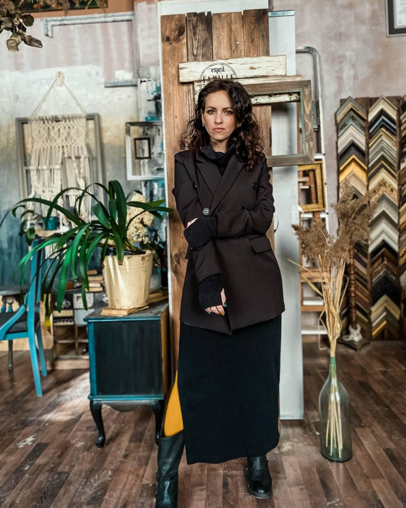
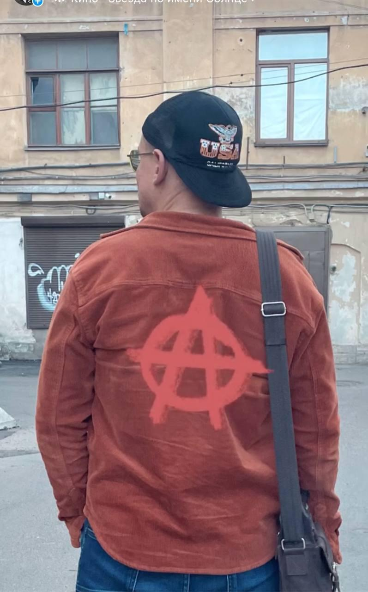

Анна Калугина
Анна Калугина, художница из Москвы, работает с мозаикой и природными материалами,
превращая их в уникальные произведения искусства. В своей практике она использует камни,
кирпичи, стекло и уголь, вдохновляясь природой и её простотой.
Художница, Москва
Карина Нуриева
Карина Нуриева, художница из Санкт-Петербурга, в своих работах исследует внутренний мир
человека, его ощущения и эмоции. В своей практике Карина использует акрил и аэрозольные
баллоны, соединяя рациональное и эмоциональное восприятие мира.
Художница, Санкт-Петербург

Катерина (Madam)
Катерина, художница из Санкт-Петербурга, работает с текстилем и вышивкой. Её творчество
сосредоточено на исследовании внутреннего мира человека, его травм и стигм. В её работах
текстиль выступает не только как визуальный элемент, но и как инструмент передачи тонких
энергий и эмоций.
Художница, Санкт-Петербург

Maestro Jackie
Maestro Jackie — уличный художник, чьи работы активно взаимодействуют с городским
пространством. В своей практике он часто обращается к социальным темам, разбирает структуру
городской среды и её воздействие на человека. Его творчество — это отражение жизни в
мегаполисе, где каждый элемент пространства имеет значение.
Художник, Санкт-Петербург